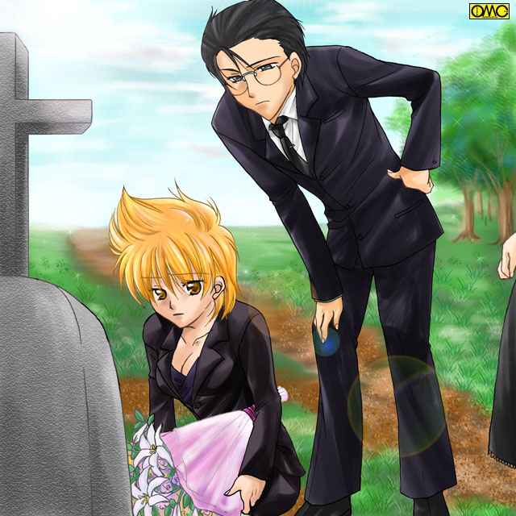

第３１話「Ｍａｒｉ」
よく晴れた日曜日。見晴らしのいい場所に現れた真理。そして榊原達八人。
花束を手に黒いレディスーツ姿の真理を先頭に進んで行く。
榊原も黒いスーツ姿。上条は街を行く格好だがやはり上下黒。十郎太は和服だが黒一色。
姫子も黒い着物。綾那はゴシックロリータ。七瀬も黒いワンピース。そしてみずきも。
やがて花束を手にした真理の歩みが止まる。
「村上。これが…」
榊原が代表で尋ねる。
「ああ」
寂しそうな真理の笑顔。
「来たよ。母さん」
もって来た花束をそっと墓標に手向ける。一同も静かにたたずむ。
真理の母の命日だった。

このイラストはＯＭＣによって作成されました。クリエイターの浅峰るかさんに感謝！！
「でもいいの？ 真理ちゃん。私たちが一緒で」
当然の七瀬の疑問。
「頼むよ。ぜひ手を合わせてほしい。母さんに…あんたたちを…アタイの友達を紹介したいんだ。
アタイは一人じゃない。こんなに楽しい仲間がいるって、教えてあげたいんだ」
まるで天国に向けて語るかのように空を見ながら言う真理。
墓参りと言うこともあり、黒一色の地味なスーツだった。
その傍らにやはり礼服の榊原。老け顔がこのときはいいほうに作用して他の面々よりはるかに似合う。
彼は真顔で喋りだす。
「そして…フィアンセであるオレも紹介するんだな。よし。村上。この後でホテルに向かおうじゃないかっ」
「いつアンタと婚約したんだぁぁぁっ」
「ぼへっ」
顔面をつかんで土がむき出しの道に叩きつける。墓前だというのに普段同様のふざけっぷりである。おかげでしんみりした雰囲気が吹っ飛んだ。
「あ〜あ」
「たいがいにせぬとたたりが怖いぞ」
さすがに「らしい」コメントの十郎太。
「あたた…相変わらずのバカ力。こんなものまで受け継がなくても」
頭をさすりながら榊原が立ち上がる。
「アタイが何を受け継いだって？」
言われた榊原は墓標を指差す。真理の母の名が刻まれている。
「お前の母さん。マチルダさんと言う名前。『力』と言う意味もあるんだよ」
「え？」
怪訝な表情になる真理。
「…そういえば…聞かされた憶えも…」
遠い記憶を探る表情に。
手を合わせて真理以外は心の中で「真理の母」に自己紹介。
一通り終わったところで少女がこの日の主役に話しかける。
「ねぇ。真理ちゃんのお母さんって、どんな人だったの」
「…………」
少女の問いかけに苦虫を噛み潰した表情になる真理。
「どうしたのよ？ 変な表情して」
少女は小首をかしげる。
「いや…可愛い格好だなと思ってさ。赤星」
みずきは未だ少女の人格のままだった。
墓参りだから地味ではあるが、瑞枝のシュミ丸出しの可愛いデザインのワンピース。スカートがふわっと広がっている。
御丁寧にニーソックスまで穿いている。
足元もスニーカーではなく女物の靴。今まで見たことないし、新しい感じであったのでワンピースともども新調したのかもしれない。
髪は既に背中の中央まで届いている。手入れがいいらしく艶やかに輝いていた。
ピンクのマニキュアに彩られた指先。そして軽く化粧をしていた。
「可愛い？ やーん。嬉しい」
以前なら怒鳴りつけられても喜ばれるはずもない「褒め言葉」だった。
それが今では普通の女の子でもやらないほどに「可愛らしく」振舞っていた。
（ますます悪化しているなぁ）
ため息の一同。ここで追求しても仕方ないので、この場は適当にあしらっていた。
「でもちょっと興味あるぅ。真理ちゃんのお母さんならやっぱり強い女性だったんだろうね」
この日はいわゆるゴシックロリータの綾那。黒を基調にしているので帽子まで黒い。お下げは解いておろしてある。
空気を変えるが如くそう切り出す。
「偏見だが…そう思うな」
黒い上下に白いシャツ。ジャケットの好きな上条らしい。珍しくネクタイまでしている。
もっとも彼が着るとなんでもコスプレに見えてしまうのは、それこそ偏見と言うものか。
「いいや」
真理は静かに首を横に振る。
「弱かったさ。弱い女だった。けど…母としては誰にも負けない人だった。悪いけどあんたらの母さんたちにも負けないと思う…いや…負けかな…アタイを残してこんなに早く逝ってしまうなんて…」
冬の空を見上げる。
１０年前。アメリカ。五歳の真理はニューヨークのアパートで母と暮らしていた。
「ただいま。マリ」
「お帰りなさい。お母さん」
真理。五歳。このころは透き通る金髪を長く伸ばして、天使のような美少女だった。
体格もまだ華奢で、後年の怪力少女からは想像も出来ないほど華奢だった。
「いい子にしていた？」
スーパーマーケットのレジのパートを努めての帰りである。
「うん。アタイいい子にしていたよ」
天真爛漫な笑顔の真理。
「マリ。『アタイ』じゃなくて『あたし』でしょ」
母･マチルダは苦笑する。
「だって難しくて…」
周囲はみんな英語である。日本語環境にないので日本独自の言葉がなじめない。
「ねぇお母さん。どうして日本の言葉で喋るの？」
真理の母･マチルダと真理の日常会話は日本語だった。
「日本はあなたのお父さんのいる国なのよ。いつかはお引越しをするから、お父さんと喋れるように日本語になれておきましょうね」
今日の真理が日本語に苦労しないのはそういう背景がある。
「お父さん…どんな人なの？」
「とっても優しい人よ」
マチルダはドイツ系のアメリカ人だった。若いころは留学先の日本で通訳をしていたこともある。
学費を稼ぐアルバイトだった。
そのときだった。
いずれは大企業のトップに立つ男。村上達也と出会ったのは。
通訳として雇われた彼女は、達也の精力的な姿に一目ぼれした。
達也もまたマチルダの美しさに心奪われた。
二人は恋に落ちた。
だが彼女は帰らざるをえなかった。唯一の肉親である母が倒れた。
お腹に愛の結晶を宿したまま。
帰ってしばらくして真理が生まれた。
二年の後。まるで入れ替わるようにマチルダの母が長い闘病のすえに亡くなった。
（これからどうしよう）
日本に渡ろうにも資金が足りない。
財産などほとんどなかった。
だが幼い子供を抱えたままだが、働いて貯金して日本へ渡る決意をした。
働いて働いて、働きぬいて。ようやく日本へ移る資金が出来たのは真理の六歳のころだった。
「お母さん見てみて」
「なぁにマリ？ まぁ」
上から見上げるのは万年雪をてっぺんにいただく大きな山。
「綺麗…」
雲の上を行く飛行機。窓から外を見ている白いワンピースでおしゃれに着飾った真理。いかにも子供らしくて愛らしかった。
「あれが富士山。お父さんの国。日本を代表する山なのよ」
「ニッポン…」
幼い真理には実感がわかなかった。
マチルダはまるで幼い子供のようにはしゃいでいる。
愛するもののいる場所へたどり着けたからか。
だがどうして彼は日本へと呼んでくれなかったのか？
お金をねだるわけではないが、どうして飛行機のチケットを送ってくれなかったのか。
そしていくら電話しても取り次いでもらえなくなった。手紙を出しても返事が来ない。
マチルダにはそれが不安であった。
しかし幼い子供の前では不安な表情は出来ない。自分自身の不安を振り払うためにむりやり笑顔を作る。
空港に着く。村上の姿を求めて辺りを見回すマチルダ。そこに一人の女性が近寄ってくる。
「マチルダ・スミスさんですね？」
クリーム色のスーツ姿。短い髪の平凡なタイプの美人。でしゃばらないタイプとも言える。
「そうですけど…あなたは？」
「わたくし村上の秘書で木村と申します」
丁寧に頭を下げる。
「タツヤは…タツヤはどこに」
「お母さん…」
取り乱す母親の姿に心をかき乱される真理。
「車を待たせてあります。社長の元へとお連れいたします」
そういわれれば黙ってついて行くしかない。
都内の高いビル。ここが村上達也が社長を務める日本有数の大企業。ローズカンパニーの本社ビルだ。
マチルダと真理はその応接室へと通される。
そこには一人の企業戦士が。
背はやや高め。精悍な引き締まった肉体を紺のスーツで包んでいる。
鋭い目つきはノートパソコンより日本刀が似合いそうだった。
「タツヤ！」
「マチルダ」
激しく抱擁する二人。この瞬間にマチルダは「母親」から「女」に戻る。涙すら流している。
それがなんだか母を取られたみたいで面白くない真理だった。
そういう意味では実父であるはずの村上達也の第一印象は悪かった。
「どうして…電話にも手紙にも出てくれなかったの？」
予期はしていた質問。けれど身構える達也。
「すまない…君と連絡を取ることはできなかった」
「……どういうこと？」
マチルダの言葉には答えず、達也はインターホンで「連れてきてくれ」と短く指示する。
秘書の木村が連れてきたのは三歳くらいの幼女。
「パパ」
まっすぐに達也に駆け寄る。
「絵梨香。いい子にしていたかい」
抱き上げるのは父親そのものの存在。
「……パパ……？」
蒼白になるマチルダ。
「許してくれ…私は既に結婚していたのだ…それが君に連絡を取れなかった理由だ」
ふらりと力が抜けるマチルダ。
外国人女性との付き合いを嫌った達也の父は、政略結婚の意味もあり別の女性をあてがった。
達也自身がマチルダとの別れでふ抜けていて、見ていられなかったのもある。
この女性の方がむしろ熱を上げていて、マチルダと分かれた寂しさも手伝い押し切られてしまった。
この子供。絵梨香も実は付き合って二年目の婚前交渉の末に。
結局、これで結婚をせざるをえなかった。
体面より申し訳なさで連絡が取れなかった。
しかし皮肉にも絵梨香の母が夜遊びをしていて、乗ったタクシーが事故に巻き込まれ運転手ともども死亡。
幼い子供を残してしまった。
村上は既に日本人女性と結婚して一子をもうけていた。
しかしその妻も既になく、マチルダは後妻と言う形で迎えられた。
真理は連れ子と言う形で。
こうしてマリ・スミスは村上真理となった。
面白くないのは絵梨香の母親の両親だ。
突然現れた、それも外国人に後継者まで。政略結婚の意味がなさなくなる。
またそんな政治的なもの以外にも娘が死んだのに、僅かな合間で別の女を迎え入れたことにも立腹していた。
幼い真理相手にも容赦ない視線が突き刺さる。ローズカンパニー側も一枚岩ではない。
と、いうのも真理の方が「義妹｣より先に生まれていた。
相続は真理に権利が行きかねない。
真理にしてみれば「義妹」になる絵梨香は友達感覚で付き合っていたが、周囲はそんなに無邪気じゃない。
これでは遺児である絵梨香を通じての企業同士の結びつきが希薄になるかも。
ローズカンパニーが大きくなるのを邪魔しているのはこの金髪の少女。
愛くるしい天使のような少女も、一部には悪魔のように見えた。
それでも一応はトップの娘。笑顔で接する。だがどうしても隠しきれないどす黒い部分が。
ある日のことだった。
マチルダと九つの真理が村上達也。絵梨香親子と｢一家｣で食事をしていたときだ。
「お食事中失礼いたします。会長」
この時点では既に会長になり激務をこなしていた。それだけにこの「団欒」は厳しいスケジュールの合間を縫ってのものだった。
それを邪魔する無粋な存在。
もっとも真理にしてみたら未だ父親になじめずにいた。
それまでは貧しいながらも母親と二人で慎ましやかに暮らしていたのに、それが壊されたみたいでいやだった。
だからこの乱入自体には腹を立てなかった。
不満顔の達也だが緊急な要件なのは本当で、仕方なく中断していた。
やがてそれも終わり会社の男は向き直る。
「失礼いたしました。奥様。真理お嬢様。絵梨香お嬢様。お食事をお楽しみください」
わざとらしいほど丁寧に礼をして立ち去る。
緊張感から解放され真理はジュースを手にした。そのときだ。真理の両手から茨が。
「ひっ？」
人形のように美しく長い金髪を振り乱して怯える九つの少女。
「どうしました？」
父親でありながら乱暴な口調でなく達也は子供たちに接していた。実はその距離感も真理がなじまない原因だったが。
「……なんでもない」
少女は口をつぐみ再びジュースのグラスを取る。そしてまた現れる茨。
（見えてないんだ。お母さんや他の人にはこの茨が…）
後にバラの茨を連想させることから「ガンズン・ローゼス」と名づけられるマリオネット発現の瞬間だ。
その茨を通じてグラスの中から思考が流れ込んでくる。
（この娘さえいなければ統合は上手く行っただろうに…邪魔だ。本当に邪魔だ）
「殺意」が流れ込んできた。恐らくはジュースに無味無臭の毒物でも。即死はしないまでもダメージがあるような。
結局、真理はジュースを一口も飲まなかった。
ガンズン・ローゼスの発現は殺意などを察知できた点ではよかった。
しかし満面の笑みに隠されたどす黒い憎悪まで手を触れるたびに流れ込んでくる。
このころから真理は人の体に触るのが苦手になる。
そして現実と御伽噺は違うと幼い身の上で知り尽くすことに。
毒物による暗殺は三度やって三度ともしくじっている。
それどころか三度目は犯人まで特定された。物証が無いもののすっかり畏れ入ってしまった。
全てはガンズン・ローゼスの力を理解した真理の仕業だった。
毒殺が不可ならばと、真理の登下校にチンピラがよく襲い掛かってくるようになって来た。
このころの真理は体もだいぶ大きくなり、そして力も。
喧嘩の際にロングヘアーを捕まれて窮地に陥ってからは、ばっさりと短く。そして威圧的に髪の毛を立たせていた。
ある襲撃のときだ。
ガンズン・ローゼスで心を読んで相手の攻撃を全て見切る真理に、業を煮やしたチンピラがナイフを抜いた。
それとて当たらなきゃ意味が無い。
突き出されたその右手を真理は反射的に掴み取る。そのときだ。
ぐしゃっと言ういやな音がしたと思ったらチンピラが右の手首を押さえて悶絶している。痛さで声がでないらしい。
「こ…このパワーは！？」
普通の女の子より力持ち…などと言うレベルではなかった。
いくら華奢な部分といえど、男の骨を握り砕いたのだから尋常ではない。
「野郎っ」
鉄パイプを振りかざして殴りかかる別のチンピラ。それを捌いて腹部に右手を食い込ませる。
「ほげぇぇぇぇぇぇぇっ」
胃袋に食い込むその指が男に脂汗を流させる。胃反吐を吐いて倒れてしまう。
「う…うわぁぁぁぁぁぁっ」
恐怖した最後の一人は半ば自暴自棄で殴りかかる。太った男で腹が突き出ている。
「的がでかいから腹の方がつかみやすいんだけどな。じゃこっちはどうだっ」
このころになると喧嘩三昧ですっかり荒っぽい口調が染み付いた真理が、むき出しの顔面を狙って右手を繰り出す。
「ぐむっ…ぐむむっ」
じたばたするチンピラだがまるで真理の右手は離れない。
本人も驚く握力だった。
結局、全員素手でのし倒した。
しかしこれが続いてはたまらない。
マチルダは真理の安全のために村上家から出て行くことにした。
「そうですか…仕方ありません」
これには真理も怒った。もともと愛せない父親である村上達也だが、それにしてもこのあっさりとした態度は無いだろうと。
「君にはまだわかりません。大人の…愛の形には色々あるのです」
「ふざけんな！ 困っているときに手を差し伸べないで何が愛だよ」
「それがマチルダの意思なら、例え私の命を差し出すことになってもかまいません。
私はマチルダの意思を第一に尊重します」
「くっ…」
もはや話にならない。真理は達也の下を去る。
（いいさ。もともとアタイと母さんは二人だけで暮らしてきたんだ。その生活に戻るだけだ）
それは楽な生活ではなかった。
マンションの費用は達也が出していたが、それだけしか受け取らなかった。真理が反発したためだ。
生活苦でやつれ、そして倒れてしまうマチルダ。やがて
「マリ。私の可愛い娘…先に天国に行く母さん許して…」
「母さん！ 死なないで。アタイを独りぼっちにしないでくれよっ」
病院に運び込まれたマチルダは、極度の疲労と病気で命の火が尽きようとしていた。
「マリ。お父さんと…仲良くするのよ…」
文字通り虫の息で言葉を絞る。
「あんなやツ父親なもんか。金だけ出せば良いと思ってる冷血動物さっ。アタイの肉親は母さんただ一人だ。だから独りぼっちにしないでくれよぉぉぉ」
「…忘れないで…マリ…あなたは私とお父さんが愛し合って生まれてきたのよ…一人なんかじゃないわ」
「母さん！」
それが最後だった。
意識が途絶え、愛した娘に看取られながら眠るように瞼を閉じる。
真理の手の中で最後の脈が打たれた。
医師が瞳孔を調べる。既にグラフは一直線になっている。
「御臨終です」
沈痛な面持ちで最後を告げる。溢れる真理の涙。
「か…母さん。母さぁぁぁぁぁぁん」
「それからはもっと荒れててさ。母さんが常日頃言っていたので高校だけは出ようかと受験したけど、
ゆかりのことであんたたちと知り合わなかったら、あのまま学校にも出向かないで腐っていたかもな」
返事が無い。不思議に思ってみてみると女性陣はみんな泣いていたのだ。
目の幅涙を流すみずきと綾那。目を真っ赤にしている七瀬。ハンカチで目頭を押さえている姫子。
「あはははは。しけた話をしてしまって悪かったね。どこかでお昼にしようか」
無理やり明るい声を出す真理。みんなを押し出して行く。そして
（母さん。アタイは元気だよ。毎日こんなやつらに囲まれてそこそこ楽しくやっている。だから心配しないで。ゆっくり眠ってね。
アタイの大好きな母さん…）
最後に挨拶をしてみんなの元に戻ろうとしたときだ。
「真理姉さん？」
「絵梨香…？」
やはり黒いドレスの少女。癖のあるロングヘア。小顔の美少女。胸と身長は控えめではあるが充分に魅力的であった。
「姉さん…やはり来てたのね。逢えると思っていた」
「絵梨香。アンタがいるってことは」
「いますよ。真理。ここに」
ローズカンパニー会長。村上達也が黒い服でそこにいた。